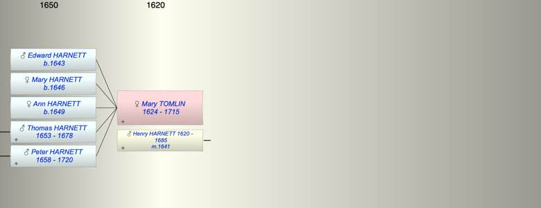

| [Index] |
| Mary TOMLIN (1624 - 1715) |
|  |
| b. 1624 |
| m. 08 Jul 1641 Henry HARNETT (1620 - 1685) at St John in Thanet |
| d. 03 Jan 1715 at St Laurence aged 91 |
| Children (5): |
| Edward HARNETT (1643 - ) |
| Mary HARNETT (1646 - ) |
| Ann HARNETT (1649 - ) |
| Thomas HARNETT (1653 - 1678) |
| Peter HARNETT (1658 - 1720) |
| Grandchildren (5): |
| Mary HARNETT, Henry HARNETT (1695 - ), James HARNETT (1702 - 1719), Peter HARNETT (1706 - 1776), Edward HARNETT (1708 - 1719) |
| Events in Mary TOMLIN (1624 - 1715)'s life | |||||
| Date | Age | Event | Place | Notes | Src |
| 1624 | Mary TOMLIN was born | ||||
| 08 Jul 1641 | 17 | Married Henry HARNETT (aged 21) | St John in Thanet | Note 1 | |
| 1643 | 19 | Birth of son Edward HARNETT | St Laurence | Note 2 | |
| 1646 | 22 | Birth of daughter Mary HARNETT | St Laurence | Note 3 | |
| 1649 | 25 | Birth of daughter Ann HARNETT | St Laurence | Note 4 | |
| 1653 | 29 | Birth of son Thomas HARNETT | St Laurence | Note 5 | |
| 1658 | 34 | Birth of son Peter HARNETT | St Laurence | Note 6 | |
| 28 Aug 1678 | 54 | Death of son Thomas HARNETT (aged 25) | St Laurence | Note 7 | |
| 09 May 1685 | 61 | Death of husband Henry HARNETT (aged 65) | St Lawrence | Note 8 | |
| 03 Jan 1715 | 91 | Mary TOMLIN died | St Laurence | Note 9 | |
| Personal Notes: |
|
I can only account for 3 sons and 2 daughters so far.
will 1715 available |
| Created on a Mac™ using iFamily for Mac™ on 8 Oct 2023 |